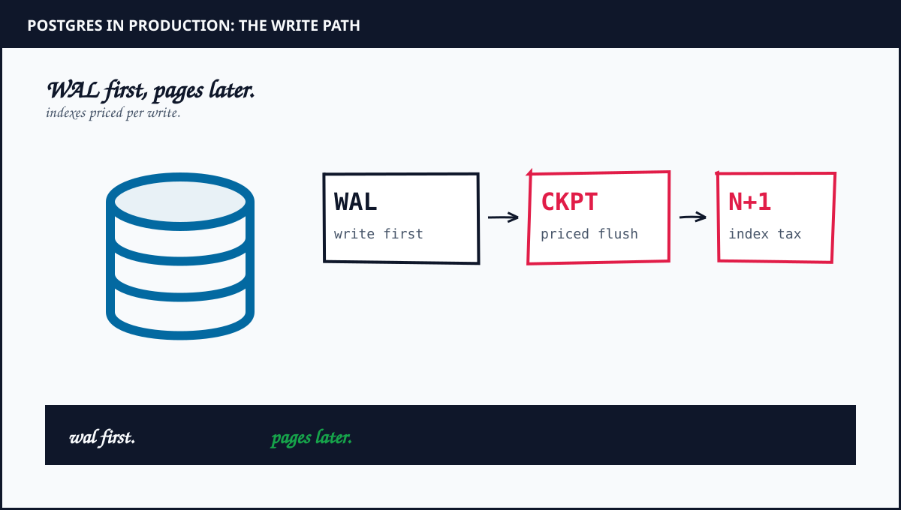

Postgres in Production: 15 Lessons From the Write Path
Nine years of Postgres under write pressure taught me one discipline: WAL first, pages later, plus receipts for every index. Each lesson starts from a real production postmortem, states its assumptions up front, plus ends in math you can re-run. The bill hides in the boundary.
TL;DR: Fifteen forensic Postgres lessons with live diagrams, from WAL to vacuum plus pooling plus backup math. Built from production postmortems with calculators for the math.
By Mukul Kumar Mishra · Database course · Updated September 30, 2026

What you will be able to do
- Size WAL plus checkpoints for peak writes, feed autovacuum before bloat rents the cache, plus tax every index per write.
- Cap connections plus pool the fleet with PgBouncer math, meter replication lag in bytes plus seconds, plus split hot tables with partitions.
- Keep planner stats fresh, hold locks briefly with timeouts, plus sign the backup contract with timed restores.
- Total cost per million writes monthly, extend with pinned versions, plus answer database interviews with math out loud.
- Ship one tuned Postgres in four weeks with dashboards plus runbooks plus a bill that falls.
How interviews test this course: WAL plus pool math out loud first, incident stories with timelines second, tradeoff pricing third. Lesson 15 ships the proof.
WAL Is the Database
Assumption first: the heap is a cache with confidence. The write-ahead log is the database. Every commit lands in WAL before touching heap pages. Crash recovery replays WAL, not wishes. Size WAL for peak write bursts plus archive it before recycling. Durability without WAL math is optimism with a port number.
- Measure p99 commit latency at peak writes. WAL-bound means disks, not queries.
- Size WAL segments for two burst windows. Recycle stalls write. Archive lag deletes durability.
- Deep dive: Doltgres Data Loss, the backup that forgot the data.
Q1. What WAL rate fits 20K writes per second with 2KB rows? Seen at: backend plus database loops.
Q2. Archive lag hits 30 minutes. What breaks first? Seen at: SRE plus data loops.
WAL secured. Now price the flush. Lesson 02: Checkpoints →
Checkpoints Are Priced Flushes
Checkpoints push dirty pages to disk plus bound recovery time. Frequent checkpoints shorten recovery while spiking write IO. Rare checkpoints smooth IO while stretching replay past SLO. Tune checkpoint timeout plus max WAL size together. The flush schedule is a recovery budget.
- Spread checkpoints with completion targets near 0.9. Clumped flushes stall p99.
- Watch checkpoint sync time in logs. Rising sync means storage ceiling, not query drift.
- Deep dive: Supabase Postgres Scale, pool math plus flush discipline.
Q1. Recovery must finish in 5 minutes. What checkpoint knobs deliver it? Seen at: backend plus database loops.
Q2. Checkpoint warnings flood logs weekly. What do you change? Seen at: SRE plus platform loops.
Flushes priced. Now clear the dead. Lesson 03: Vacuum →
Vacuum Keeps the Dead Moving
Updates plus deletes leave dead tuples behind. Autovacuum reclaims them plus freezes old transaction IDs before wraparound. Starved vacuum bloats tables plus slows every scan. Feed autovacuum workers plus cost limits for write-heavy tables. Dead rows compound like unpaid bills.
- Track oldest transaction age per table. Past 200M demands attention before the 2B ceiling.
- Raise workers plus cost limits on hot tables. Global defaults starve the busiest writes.
- Deep dive: MoEngage Millisecond, write-heavy deu00e9 discipline, priced.
Q1. Oldest XID passes 500M on the orders table. What runs tonight? Seen at: database plus backend loops.
Q2. Autovacuum cannot keep up at peak. What knobs move first? Seen at: SRE plus data loops.
Dead moving. Now measure the rent. Lesson 04: Bloat →
Bloat Is Slow Storage Rent
Bloat is dead space between live rows. Bloated tables waste cache plus inflate IO plus slow index scans. Measure bloat per table monthly. Rebuild with concurrent methods during low windows. Storage without bloat math rents the same page twice.
- Compare live tuple size against relation size. Gaps above 20 percent earn a rebuild plan.
- Prefer concurrent rebuilds on hot tables. Exclusive locks during peak trade bloat for outage.
- Deep dive: Notion Architecture, 200B blocks with Postgres discipline.
Q1. Orders table reads 3x pages per live row. What is the fix window? Seen at: backend plus data loops.
Q2. Cache hit ratio falls while queries stay constant. What do you inspect? Seen at: database plus SRE loops.
Rent measured. Now tax the writes. Lesson 05: Indexes →
Indexes Bill Per Write
Every index speeds reads plus taxes writes. Five indexes on a hot table multiply write amplification plus WAL volume plus vacuum load. Index the queried path, drop the hopeful one, plus measure hit ratios per index. Unused indexes are payroll for no staff.
- Audit index scans monthly. Zero-scan indexes on write tables are pure cost.
- Prefer composite order that matches filters plus sort. One composite beats three singles.
- Deep dive: ShareChat Assignment, store requested-together data together.
Q1. Write p99 doubles after adding two indexes. What proves the cause? Seen at: backend plus database loops.
Q2. Which indexes survive a 10x write season? Seen at: data plus platform loops.
Writes taxed. Now count the doors. Lesson 06: Connections →
Connections Are Finite
Each Postgres connection forks a backend with dedicated memory. Thousands of direct connections exhaust RAM plus context-switch the host into stillness. Cap connections near a few hundred per primary. Queue plus pool above that line. Connections scale with pooling, not hope.
- Size max connections from RAM per backend. Past the line, latency climbs faster than throughput.
- Set statement timeouts plus idle timeouts. Leaked idle connections are slow eviction.
- Deep dive: Discord Messages Scale, trillions of rows behind finite doors.
Q1. Fleet needs 5K concurrent sessions on one primary. What architecture holds? Seen at: backend plus database loops.
Q2. Idle connections climb nightly. What reaps them safely? Seen at: SRE plus platform loops.
Doors counted. Now pool them. Lesson 07: Pooling →
Pooling With PgBouncer Math
PgBouncer multiplexes thousands of app sessions onto tens of real backends. Transaction mode suits stateless apps. Session mode suits prepared flows with state. Pool at the edge of each region plus size for peak plus bursts. Pooling turns connection storms into queues with numbers.
- Little Law prices the pool: backends equal arrival rate times hold time plus headroom.
- Pin transaction mode for stateless APIs. Audit prepared statements before switching modes.
- Deep dive: Supabase Postgres Scale, pool math at fleet scale.
Q1. Size a pool for 8K RPS with 25ms hold time. Show the math. Seen at: backend plus database loops.
Q2. P99 spikes while backends idle. What pool knob lies? Seen at: SRE plus data loops.
Fleet pooled. Now watch the lag. Lesson 08: Replication →
Replication Lag Is a Queue
Streaming replication ships WAL to standbys plus replays in order. Lag equals queued bytes divided by replay rate. Long transactions plus heavy DDL stretch the queue. Monitor lag in bytes plus seconds together. Promotion without lag math promotes yesterday.
- Alert on lag bytes first, seconds second. Bytes measure work. Seconds measure pain.
- Keep long writes off primaries during peak. One hour transaction stalls every standby.
- Deep dive: Razorpay Kafka, queue math across systems.
Q1. Lag holds at 2GB during peak. When is promotion safe? Seen at: database plus SRE loops.
Q2. Replica serves stale reads at noon daily. What scheduled job causes it? Seen at: data plus backend loops.
Lag metered. Now split the heat. Lesson 09: Partitioning →
Partitioning Splits the Hot Path
Range plus list partitioning prune cold data from hot queries. Time partitions age out cleanly with detach instead of delete. Hash partitions spread writes across files. Partition for pruning plus retention, not fashion. Unpruned partitions are decoration with DDL.
- Verify partition pruning with explain plans. Missing constraint exclusion means full scans in costume.
- Detach plus archive old partitions monthly. Delete loops bloat while detach frees instantly.
- Deep dive: Stripe Ledger Scale, ledger growth with pruning discipline.
Q1. Queries scan all 60 monthly partitions. What constraint restores pruning? Seen at: backend plus data loops.
Q2. Retention needs 13 months online. What partition scheme holds? Seen at: data plus platform loops.
Heat split. Now feed the planner. Lesson 10: Planner →
Planner Stats Decide the Plan
The planner picks joins plus scans from table statistics. Stale stats choose nested loops for million-row joins. Analyze hot tables after bulk loads plus schema shifts. Targeted stats plus expression indexes fix skewed columns. Plans without fresh stats are guesses with cost labels.
- Compare estimated rows against actual rows in slow plans. Ratios past 10x mean stale stats.
- Raise stats targets on skewed columns. Defaults undersample the columns that decide joins.
- Deep dive: Figma Multiplayer Cost, hot paths with honest stats.
Q1. Plan estimates 100 rows, executes 2M. What runs first? Seen at: backend plus database loops.
Q2. Bulk load finishes Sunday. What runs before Monday traffic? Seen at: data plus SRE loops.
Plans honest. Now order the queue. Lesson 11: Locks →
Locks Queue Behind Each Other
Row locks serialize writers. Table locks serialize deploys. Long transactions hold both while the queue grows. Keep transactions short plus move DDL to concurrent forms plus timeout lock waits. Lock graphs without timeouts are outage schedules.
- Log lock waits past 1 second. One holder with 500 waiters is the incident before the incident.
- Use concurrent index builds plus short migrations. Single giant migration locks the quarter.
- Deep dive: Salesforce Login Queue, queues that ate the morning.
Q1. Deploy adds an index with exclusive lock at noon. What is the safe form? Seen at: backend plus SRE loops.
Q2. Five hundred sessions wait on one row. What holder do you hunt? Seen at: database plus platform loops.
Queue thinned. Now sign the contract. Lesson 12: Backups →
Backups Plus PITR Are the Contract
Base backups plus WAL archives define point-in-time recovery. Untested restores are fiction with retention labels. Restore quarterly to staging plus time the replay plus verify checksums. Recovery objectives without restore drills are marketing with cron.
- Time full restore plus WAL replay quarterly. RTO equals measured replay, not hoped replay.
- Retain archives across regions. Single-region archives share fate with the fire.
- Deep dive: Doltgres Data Loss, backups must hold data.
Q1. RPO demands 5 minutes. What archive cadence proves it? Seen at: SRE plus database loops.
Q2. Restore drill fails twice. What changes before the third run? Seen at: platform plus data loops.
Contract signed. Now extend wisely. Lesson 13: Extensions →
Extensions Without Regret
pgvector plus PostGIS plus pg_stat_statements extend Postgres into search plus geo plus observability. Each extension adds upgrade plus backup plus replication surface. Pin versions plus test upgrades on replicas first. Extensions without upgrade plans are lock-in with docs.
- Price extension upgrades per major Postgres bump. Untested paths block version moves for quarters.
- Start with pg_stat_statements everywhere. Measurement pays before vectors do.
- Deep dive: Cursor Token Postmortem, retrieval bills with receipts.
Q1. pgvector upgrade blocks Postgres 17. What unblocks the quarter? Seen at: backend plus data loops.
Q2. Which extensions ride the primary versus the warehouse copy? Seen at: platform plus data loops.
Power metered. Now total the month. Lesson 14: Bill →
The Postgres Bill
Postgres bills in IO plus storage plus replicas plus backup retention. Provisioned IOPS dominate write-heavy months. Replicas double steady state before traffic. Retention stretches archives linearly. Total cost per million writes monthly. The bill hides in the boundary between provisioned peaks plus average days.
- Attribute cost per million writes per workload. Noisy neighbors hide inside shared instances.
- Right-size IOPS to p95, not p100. Burst credits cover peaks cheaper than provisioned ceilings.
- Deep dive: Notion Lake Cost, lake bills with the same math.
Q1. Write volume doubles next quarter. Which line item moves first? Seen at: backend plus data loops.
Q2. Replica fleet costs more than primary. What topology trims it? Seen at: SRE plus platform loops.
Month totaled. Now prove it aloud. Lesson 15: Capstone →
Ship One Postgres
Capstone: migrate one workload onto tuned Postgres in four weeks. Week one measures WAL plus bloat plus pool math. Week two tunes vacuum plus checkpoints plus indexes. Week three rehearses backup restore plus replica promotion. Week four ships with dashboards plus runbooks. Graduates carry numbers, not certificates.
- Exit criteria: p99 halved plus bloat under 10 percent plus restore timed plus pool sized with math shown.
- Present the bill per million writes before plus after. Savings fund the next migration.
- Deep dive: System Design Course, the 15-lesson companion from real outages.
Q1. Walk me through sizing WAL plus pools for 30K writes per second. Seen at: backend plus database loops.
Q2. Your restore drill missed RTO by 2x. What ships Monday? Seen at: SRE plus platform loops.
Course complete. Start the companion. System Design Course →